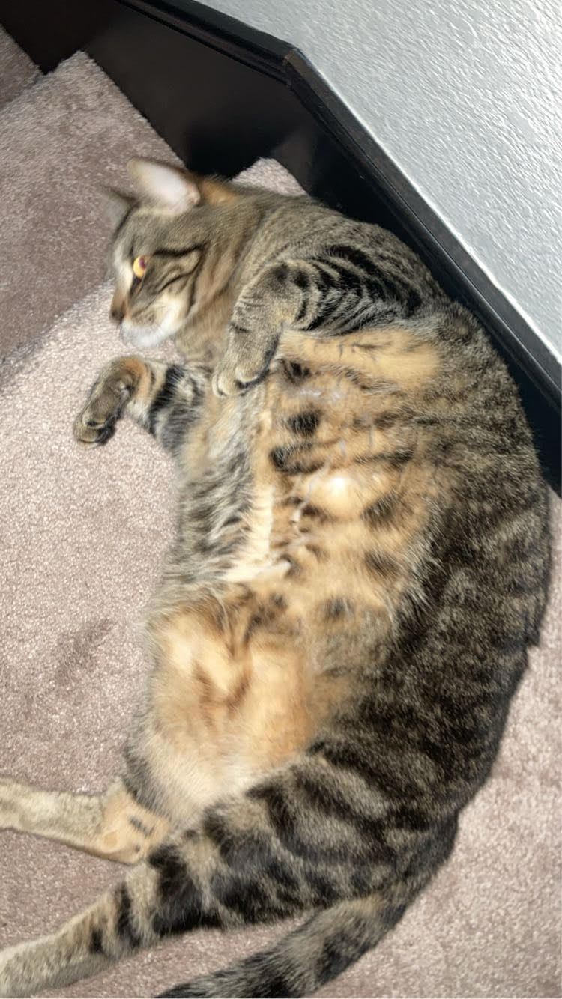

Domestic short-haired cats are all cats that are non-specific breeds and that have short hair. Cats usually have bodies that are around 18 inches long, tails that are 12 inches long, and a height of about 9.5 inches tall. The weight of a fully grown cat ranges from 8.8 to 11.0 pounds.
There are about 600 million cats currently on the plannet.
The coat coloration of cats is controlled by two diffrent genes MC1R and ASIP.
Cats posses dichromatic vision. They are only able to see blue and yellowish green.

The above photos are of my cat Tiger, a domestic short-haired cat.